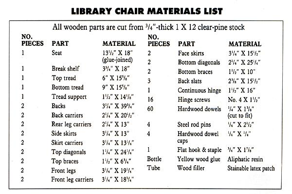

IN THE FAMILY COTTAGE AT NORTH Carolina's High Hampton Inn, there's a piece of furniture that's unobtrusive, yet at the same time curious. It's an upright wooden chair that folds over itself to become a stepping stool-aptly called a library chair because of its practicality in a room where standing and reaching for books can occupy as much time as sitting and reading the volumes.
Even if you don't have a study, you can find plenty of use for a chair such as this in the kitchen, dining room or any other place where there are shelves beyond normal reach. The original piece-made over a century ago for former governor Wade Hampton of South Carolina-is somewhat narrower and a bit taller than the one you see here, but our modern version is a lot easier to build and uses a store-bought, workable clear pine rather than the stubborn, handmilled oak of an earlier time.
The library chair solves the problem of having hero pieces of furniture where there's really only room for one. Folded over itself, it's a sturdy step stool; otherwise, it's a comfortable straightbacked chair that is not all that costly or difficult to build.
The chair converts to a stool by unhooking a latch and folding the back forward.
Simple as this project is, you'll still welcome the help of a few power tools. A fine-bladed jigsaw and an orbital palm sander would each go a long way toward quickly shaping a number of parts, and a 3/8" variable-speed drill with a 1/4" Forstner bit could be used to sink the dowel-pin holes that connect components. In lieu of a standing table saw, a carefully wielded circular saw or ripsaw can be used to make the necessary straight cuts.
Be mindful of selecting clear or knot-free lumber for the project. Any good structural species will do, yet a No. 1 or select softwood-pine, hemlock or western fir, for example-combines the benefits of availability, low cost and a sound, straight grain. The best 1 X 12 shelving stock is a good choice since you can plan around any imperfections. Count on using two 8' boards-and double that if you buy 1 X 6s and plan to glue-join the few parts wider than 5 1/2".
To start, cut all the pieces to their unfinished dimension as indicated in the materials list. Note that the size of the seat asks that you edge-glue two boards together to get the required 13 1/2" depth. That done, begin shaping the individual parts. If you make your cuts accurately, the joints will be structurally sound; small gaps can be filled and smoothed later.
Take a look at how the chair is designed- facers adjoin carriers, which support the crosspieces. Since nearly every component of the chair has a duplicate, it's best to clamp and cut each pair together so they're symmetrical. In the case of the carriers, they can be traced from the trimmed face pieces, then match-cut with their mates.
Don't glue any parts together until you've cut the notches (18 altogether) into their respective pieces as shown in the illustration.
If you have a table saw, this job will be easy; if not, use the jigsaw or a backsaw to make the two shoulder cuts, and a sharp chisel to finish each back cut.
Assemble the project in three stages: 1) the chair base, including the bottom tread, 2) the back, seat frame and top tread and 3) the seat, break shelf and back slats.
The chair converts to a stool by unhooking a latch and folding the back forward.
Both treads are made so the framework is built around them; you may want to use a couple of clamps to hold the diagonals against the leg facers while you position the tread boards and the support. Once they're in place, bore all the dowel sockets accurately by bar-clamping the opposite braces and facers to keep them from moving while you sink the holes to a depth of 1 3/8. Notice that at the leading edge of each tread corner, where the diagonals pass through the tread notches, a 1/4" X 2 1/2" steel rod is used instead of a wooden dowel. Drill those four sockets to the extra depth required.
With all the framing parts prepared, you can glue the joints and sink the dowels into their glued sockets. Reclamp the frames, and let the adhesive set completely. Afterward, take the sander and finish rounding the square edges and flattening the spots meant to be flush, including the dowel tips.
At this point, the seat boards and back slats can be sanded and fitted. First, cut a 1/8" X 16" notch into the square edge of the break shelf to provide a mortise for the folded hinge. Then, align the flat corners at the rear of the shelf with the squared backs of the front legs. Use four dowels to fasten the shelf to the top of the base.
Next, attach the large seat board to its frame using the eight dowels remaining. Complete the back by gluing the three slats into their notches. Finally, place the seat frame upside down on the base, and fasten the hinge with No. 4 X 1 1/2" flathead screws so that the pin is centered. To help guide the seat straight onto the base when folding the chair, you may want to use the sander to slightly bevel the inside corners of the rear legs.
If you've chosen a select grade of wood and filled the gaps with care, the chair will take a stain and a clear finish nicely. Wood with more than a few surface blemishes, however, may look better sealed first with a primer, then painted with a semigloss finish.
Once the final coat is dry, you can fasten the flat catch to the outside face of one set of diagonals to keep the chair from unfolding when it's lifted. Use the upended rear legs as a handhold if you need to, but-for safety's sake-never stand on the top tread. The area just behind the hinge is the best place to put your weight when using the chair as a stool.
|
MICHEAL SOLURI |
 |
|